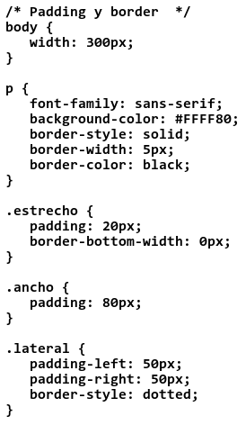

15. Padding and border¶
The box where the content (text or images) is located can have a border, a margin to the border called padding and a margin with the other elements called margin.
In the following figure you can see each of these parameters.

In this exercise we will modify the padding and border parameters of different paragraphs.
References.
Exercise¶
File css-padding-border.html
1 2 3 4 5 6 7 8 9 10 11 12 13 14 15 16 17 18 19 20 21 22 23 | <!doctype html>
<html>
<head>
<title> Padding y border </title>
<link rel="stylesheet" type="text/css"
href="css-padding-border.css" >
</head>
<body>
<h1> Padding y border </h1>
<p class="estrecho"> Párrafo de ejemplo con padding de 20 pixel
y sin borde abajo (bottom).</p>
<p class="ancho"> Párrafo de ejemplo con padding de 80 pixel.</p>
<p class="lateral"> Párrafo de ejemplo con padding a la izquierda
y a la derecha de 50 pixel y borde punteado. </p>
</body>
</html>
|
File css-padding-border.css
